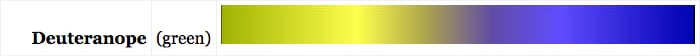

Processamento Digital de Imagens
1. Exercícios:
a) Regiões
#include < iostream >
#include < opencv2/opencv.hpp >
using namespace std;
using namespace cv;
//Regions
int main()
{
cout << "EXERCICIO 01 - REGIONS" << endl << endl;
Mat imagem;
Vec3b val;
imagem = imread("canguru.png", CV_LOAD_IMAGE_GRAYSCALE);
if (!imagem.data) {
cout << ("Nao abriu arquivo") << endl;
}
else {
int P1x, P1y, P2x, P2y;
int altura = imagem.size().height;
int largura = imagem.size().width;
cout << "A imagem tem altura " << altura << " e largura " << largura << endl << endl;
cout << "Digite um ponto P1." << endl;
while (1) {
cout << "Coordenada X: ";
cin >> P1x;
if (P1x > 0 && P1x < largura) {
break;
}else {
cout << "O Valor deve estar entre 1 e " << largura << endl;
}
}
while (1) {
cout << "Coordenada Y: ";
cin >> P1y;
if (P1y > 0 && P1y < altura) {
break;
}
else {
cout << "O Valor deve estar entre 1 e " << altura << endl;
}
}
cout << endl << "Digite um ponto P2." << endl;
while (1) {
cout << "Coordenada X: ";
cin >> P2x;
if (P2x > 0 && P2x < largura) {
break;
}
else {
cout << "O Valor deve estar entre 1 e " << largura << endl;
}
}
while (1) {
cout << "Coordenada Y: ";
cin >> P2y;
if (P2y > 0 && P2y < altura) {
break;
}
else {
cout << "O Valor deve estar entre 1 e " << altura << endl;
}
}
imshow("janela (Original)", imagem);
waitKey(3000);
//Negativo de uma imagem eh: 255 - valor de cor do pixel.
for (int i = P1x; i < P2x ; i++) {
for (int j = P1y ;j < P2y ;j++) {
imagem.at<uchar>(i, j) = 255 - imagem.at<uchar>(i, j);
}
}
imshow("janela (Modificada)", imagem);
}
waitKey();
return 0;
}


b) Troca regiões
#include < iostream >
#include < opencv2/opencv.hpp >
using namespace std;
using namespace cv;
//Troca Regioes
int main()
{
cout << "EXERCICIO 02 - TROCA REGIOES" << endl << endl;
Mat imagem;
Mat imagemAUX;
imagem = imread("canguru.png", CV_LOAD_IMAGE_GRAYSCALE);
imagemAUX = imread("canguru.png", CV_LOAD_IMAGE_GRAYSCALE);
if (!imagem.data) {
cout << ("Nao abriu arquivo") << endl;
}
else {
imshow("janela (Original)", imagem);
waitKey(3000);
int P1x, P1y, P2x, P2y;
int altura = imagem.size().height;
int largura = imagem.size().width;
int meiaAltura = altura / 2;
int meiaLargura = largura / 2;
//Primeiro Quadrante
for (int i = 0; i < meiaAltura; i++) {
for (int j = 0; j < meiaLargura; j++) {
imagem.at<uchar>(i, j) = imagemAUX.at<uchar>(i + meiaAltura, j + meiaLargura);
}
}
//Segundo Quadrante
for (int i = meiaAltura; i < altura; i++) {
for (int j = 0; j < meiaLargura; j++) {
imagem.at<uchar>(i, j) = imagemAUX.at<uchar>(i - meiaAltura, j + meiaLargura);
}
}
//Terceiro Quadrante
for (int i = 0; i < meiaAltura; i++) {
for (int j = meiaLargura; j < largura; j++) {
imagem.at<uchar>(i, j) = imagemAUX.at<uchar>(i + meiaAltura, j - meiaLargura);
}
}
//Quarto Quadrante
for (int i = meiaAltura; i < altura; i++) {
for (int j = meiaLargura; j < largura; j++) {
imagem.at<uchar>(i, j) = imagemAUX.at<uchar>(i - meiaAltura, j - meiaLargura);
}
}
imshow("janela (Modificada)", imagem);
}
waitKey();
return 0;
}

c) Corrigindo Labeling
No programa labeling.cpp, se houver o caso em que haja mais de 255 objetos na imagem, A rotulação chegará a um valor que atrapalhará o processo. O problema pode ser corrigido alterando a linha de código abaixo:
floodFill(image,p,nobjects);
fixando o valor da variavel, mudamos para, por exemplo:
floodFill(imagem, p, 100);
d) Conta Buracos
#include < iostream >
#include < opencv2/opencv.hpp >
using namespace std;
using namespace cv;
int main()
{
cout << "03 CONTA BURACOS" << endl << endl;
Mat imagem, mask;
int altura, largura;
int nobjects, nburaco;
CvPoint p;
imagem = imread("bolhas.png", CV_LOAD_IMAGE_GRAYSCALE);
if (!imagem.data) {
cout << "imagem nao carregou corretamente\n";
return(-1);
}
altura = imagem.size().height;
largura = imagem.size().width;
p.x = 0;
p.y = 0;
//Apaga Buracos nas borda verticais
for (int i = 0; i < altura; i++) {
p.x = 0;
if (imagem.at<uchar>(i, p.x) == 255) {
p.y = i;
floodFill(imagem, p, 0);
}
p.x = largura - 1;
if (imagem.at<uchar>(i, p.x) == 255) {
p.y = i;
floodFill(imagem, p, 0);
}
}
//Apaga Buracos nas borda Horizontais
for (int i = 0; i < largura; i++) {
p.y = 0;
if (imagem.at<uchar>(p.y, i) == 255) {
p.x = i;
floodFill(imagem, p, 0);
}
p.y = altura - 1;
if (imagem.at<uchar>(p.y, i) == 255) {
p.x = i;
floodFill(imagem, p, 0);
}
}
p.x = 0;
p.y = 0;
//Pinta o fundo de outra cor diferente do preto original
floodFill(imagem, p, 1);
// Conta quantos objetos tem
nobjects = 0;
for (int i = 0; i < altura; i++) {
for (int j = 0; j < largura; j++) {
if (imagem.at<uchar>(i, j) == 255) {
// achou um objeto
nobjects++;
p.x = j;
p.y = i;
floodFill(imagem, p, 100);
}
}
}
p.x = 0;
p.y = 0;
nburaco = 0;
for (int i = 0; i < altura; i++) {
for (int j = 0; j < largura; j++) {
if (imagem.at<uchar>(i, j) == 0 && imagem.at(i, j - 1) == 100) {
// achou um buraco
nburaco++;
p.x = j;
p.y = i;
floodFill(imagem, p, 150);
p.x = j - 1;
floodFill(imagem, p, 50);
}
}
}
cout << "A imagem possui " << nobjects << " objetos, " << nburaco <<" com buracos." << endl;
imshow("imagem", imagem);
imwrite("novo.png", imagem);
waitKey();
return 0;
}
OBS: Modifiquei a imagem Bolhas.png original, colocando 3 buracos em uma bolha para verificar a eficiência do programa.


e) Equalização
#include < iostream >
#include < opencv2/opencv.hpp >
using namespace std;
using namespace cv;
int main()
{
cout << "04 Equalizador" << endl << endl;
Mat imagem;
int largura, altura;
VideoCapture cap;
vector<Mat> planes;
Mat histR, histG, histB;
int nbins = 64;
float range[] = { 0, 256 };
const float *histrange = { range };
bool uniform = true;
bool acummulate = false;
cap.open(0);
if (!cap.isOpened()) {
cout << "cameras indisponiveis";
return -1;
}
largura = cap.get(CV_CAP_PROP_FRAME_WIDTH);
altura = cap.get(CV_CAP_PROP_FRAME_HEIGHT);
cout << "largura = " << largura << endl;
cout << "altura = " << altura << endl;
int histw = nbins, histh = nbins / 2;
Mat histImgR(histh, histw, CV_8UC3, Scalar(0, 0, 0));
Mat histImgG(histh, histw, CV_8UC3, Scalar(0, 0, 0));
Mat histImgB(histh, histw, CV_8UC3, Scalar(0, 0, 0));
while (1) {
cap >> imagem;
split(imagem, planes);
//Equalização
equalizeHist(planes[0], planes[0]);
equalizeHist(planes[1], planes[1]);
equalizeHist(planes[2], planes[2]);
merge(planes, imagem);
//fim dela
calcHist(&planes[0], 1, 0, Mat(), histR, 1,
&nbins, &histrange,
uniform, acummulate);
calcHist(&planes[1], 1, 0, Mat(), histG, 1,
&nbins, &histrange,
uniform, acummulate);
calcHist(&planes[2], 1, 0, Mat(), histB, 1,
&nbins, &histrange,
uniform, acummulate);
normalize(histR, histR, 0, histImgR.rows, NORM_MINMAX, -1, Mat());
normalize(histG, histG, 0, histImgG.rows, NORM_MINMAX, -1, Mat());
normalize(histB, histB, 0, histImgB.rows, NORM_MINMAX, -1, Mat());
histImgR.setTo(Scalar(0));
histImgG.setTo(Scalar(0));
histImgB.setTo(Scalar(0));
for (int i = 0; i < nbins; i++) {
line(histImgR,
Point(i, histh),
Point(i, histh - cvRound(histR.at(i))),
Scalar(0, 0, 255), 1, 8, 0);
line(histImgG,
Point(i, histh),
Point(i, histh - cvRound(histG.at(i))),
Scalar(0, 255, 0), 1, 8, 0);
line(histImgB,
Point(i, histh),
Point(i, histh - cvRound(histB.at(i))),
Scalar(255, 0, 0), 1, 8, 0);
}
histImgR.copyTo(imagem(Rect(0, 0, nbins, histh)));
histImgG.copyTo(imagem(Rect(0, histh, nbins, histh)));
histImgB.copyTo(imagem(Rect(0, 2 * histh, nbins, histh)));
imshow("imagem", imagem);
if (waitKey(30) >= 0) break;
}
return 0;
}


f) Detector de Movimento
#include < iostream >
#include < opencv2/opencv.hpp >
using namespace std;
using namespace cv;
int main()
{
cout << "05 Detector de Movimento" << endl << endl;
Mat imagem;
int largura, altura;
VideoCapture cap;
vector<Mat> planes;
Mat histB, hist_old;
int nbins = 64;
float range[] = { 0, 256 };
const float *histrange = { range };
bool uniform = true;
bool acummulate = false;
cap.open(0);
if (!cap.isOpened()) {
cout << "cameras indisponiveis";
return -1;
}
largura = cap.get(CV_CAP_PROP_FRAME_WIDTH);
altura = cap.get(CV_CAP_PROP_FRAME_HEIGHT);
cout << "largura = " << largura << endl;
cout << "altura = " << altura << endl;
int histw = nbins, histh = nbins / 2;
Mat histImgB(histh, histw, CV_8UC3, Scalar(0, 0, 0));
bool primeiro = true;
int n=0;
//Esperar preparar camera
while (n < 100) {
cap >> imagem;
imshow("imagem", imagem);
n++;
}
//fim
n = 0;
while (1) {
cap >> imagem;
split(imagem, planes);
calcHist(&planes[2], 1, 0, Mat(), histB, 1,
&nbins, &histrange,
uniform, acummulate);
if (primeiro) {
hist_old = histB.clone();
primeiro = false;
}
double compara = compareHist(histB, hist_old, CV_COMP_CHISQR);
if (compara > 900) {
cout << compara << endl;
putText(imagem, "ALERTA!!", cvPoint(50, 250), CV_FONT_HERSHEY_DUPLEX, 4, cvScalar(0, 0, 255), 1, CV_AA);
if (n % 5 == 0) {
string texto = "invasor" + to_string(n) + ".png";
imwrite(texto, imagem);
}
n++;
}
hist_old = histB.clone();
imshow("imagem", imagem);
if (waitKey(30) >= 0) break;
}
return 0;
}


c) Filtro Espacial I
#include < iostream >
#include < opencv2/opencv.hpp >
using namespace cv;
using namespace std;
void printmask(Mat &m) {
for (int i = 0; i < m.size().height; i++) {
for (int j = 0; j < m.size().width; j++) {
cout << m.at(i, j) << ",";
}
cout << endl;
}
}
void menu() {
cout << "\npressione a tecla para ativar o filtro: \n"
"a - calcular modulo\n"
"m - media\n"
"g - gauss\n"
"v - vertical\n"
"h - horizontal\n"
"l - laplaciano\n"
"z - laplaciano do gaussiano\n"
"esc - sair\n";
}
int main(int argvc, char** argv) {
VideoCapture video;
float media[] = { 1,1,1,
1,1,1,
1,1,1 };
float gauss[] = { 1,2,1,
2,4,2,
1,2,1 };
float horizontal[] = { -1,0,1,
-2,0,2,
-1,0,1 };
float vertical[] = { -1,-2,-1,
0,0,0,
1,2,1 };
float laplacian[] = { 0,-1,0,
-1,4,-1,
0,-1,0 };
float laplaglass[] = { 0,0,1,0,0,
0,1,2,1,0,
1,2,-16,2,1,
0,1,2,1,0,
0,0,1,0,0 };
Mat cap, frame, frame32f, frameFiltered;
Mat mask(3, 3, CV_32F), mask1;
Mat result, result1;
double width, height, min, max;
int absolut;
char key;
video.open(0);
if (!video.isOpened())
return -1;
width = video.get(CV_CAP_PROP_FRAME_WIDTH);
height = video.get(CV_CAP_PROP_FRAME_HEIGHT);
std::cout << "largura=" << width << "\n";;
std::cout << "altura =" << height << "\n";;
namedWindow("filtroespacial", 1);
mask = Mat(3, 3, CV_32F, media);
scaleAdd(mask, 1 / 9.0, Mat::zeros(3, 3, CV_32F), mask1);
swap(mask, mask1);
absolut = 1; // calcs abs of the image
menu();
for (;;) {
video >> cap;
cvtColor(cap, frame, CV_BGR2GRAY);
flip(frame, frame, 1);
imshow("original", frame);
frame.convertTo(frame32f, CV_32F);
filter2D(frame32f, frameFiltered,
frame32f.depth(), mask, Point(1, 1), 0);
if (absolut) {
frameFiltered = abs(frameFiltered);
}
frameFiltered.convertTo(result, CV_8U);
imshow("filtroespacial", result);
key = (char)waitKey(10);
if (key == 27) break; // esc pressed!
switch (key) {
case 'a':
menu();
absolut = !absolut;
break;
case 'm':
menu();
mask = Mat(3, 3, CV_32F, media);
scaleAdd(mask, 1 / 9.0, Mat::zeros(3, 3, CV_32F), mask1);
mask = mask1;
printmask(mask);
break;
case 'g':
menu();
mask = Mat(3, 3, CV_32F, gauss);
scaleAdd(mask, 1 / 16.0, Mat::zeros(3, 3, CV_32F), mask1);
mask = mask1;
printmask(mask);
break;
case 'h':
menu();
mask = Mat(3, 3, CV_32F, horizontal);
printmask(mask);
break;
case 'v':
menu();
mask = Mat(3, 3, CV_32F, vertical);
printmask(mask);
break;
case 'l':
menu();
mask = Mat(3, 3, CV_32F, laplacian);
printmask(mask);
break;
case 'z':
menu();
mask = Mat(5, 5, CV_32F, laplaglass);
printmask(mask);
break;
default:
break;
}
}
return 0;
}

c) Corrigindo Labeling
Filtro de Daltonismo
O objetivo deste projeto é a criação de um programa que lê uma imagem qualquer e mostra de forma simulada
como seria esta imagem na visão de uma pessoa daltônica, essa simulação se dá através de uma
transformação da imagem mudando os valores HSV dos pixels.
Existem 7 tipos de Daltonismo. Cada um deles enxerga um espectro diferente e mais limitado que o espectro
de cores da visão considerana normal para os seres humanos. Destes 7, os 4 principais tipos de
Daltonismo são: Protanopia, Deuteranopia, Tritanopia e Monocromacia.
PROPANOPIA
A propanopia é caracterizada pela ausência de cones vermelhos na retina, isso faz com que o indivíduo com este
problema enxergue um espectro amarelo e azul, como mostrado na imagem abaixo:
DEUTERANOPIA
A deuteranopia é caracterizada pela ausência de cones verdes na retina, apesar de ser um problema diferente do
anterior, o resultado é algo similar, apesar de haver diferenças.:

TRITANOPIA
A tritanopia é caracterizada pela ausência de cones azuis na retina, isso faz com que o indivíduo com este
problema enxergue um espectro vermelho e ciano:
MONOCROMACIA
A monocromacia faz com que o indivíduo enxergue um espectro preto e branco apenas:
Como fazer uma imagem ser mostrada em preto e branco é demasiado simples e o espectro enxergado pelos indivíduos
como propanopia e deuteranopia são muito similares, o programa criado se foca em mostrar a transformação das imagens
para Propanopia e Tritanopia apenas.
A lógica dele funciona da seguinte forma, ele varre a imagem pixel a pixel, e envia os valores HSV (Matiz, Saturação e Valor) para
uma função que irá modificar os valores para o espectro respectivo (Propanopia e Tritanopia), gerando duas novas imagens que são a
simulação da visão de alguém com daltonismo.
Por exemplo, o valor de Matiz (H) entre vermelho e Ciano (0 a 180 aproximadamente) é levado a algo próximo a um amarelo (60) na
propanopia. O valor H do pixel é usado para ponderar seu valor no espectro através de uma equação, e o deixa mais ou menos próximo
do valor central de amarelo (60). A mesma lógica é aplicada para os valores de S e V da imagem.
O código completo pode ser visto abaixo:
#include < iostream >
#include < opencv2/opencv.hpp >
using namespace std;
using namespace cv;
//Value:
int PropV(int H, int S, int V) {
int resp = V;
if (S >= 120) {//Se não for muito claro
float vf = float(V);
float hf = float(H);
float div = 1.0;
if (H >= 0 && H <= 29) {//0 e 60
div = ((hf*(-1.0) / 29.0) + 2.0);
}
else if (H <= 60) {//61 e 120
hf = hf - 30;
div = ((hf*(1.0) / 30.0) + 1.0);
}
else if (H <= 90) {//121 e 180
hf = hf - 61;
div = ((hf*(-1.0) / 29.0) + 2.0);
}
else if (H <= 120) {//181 e 240
hf = hf - 91;
div = ((hf*(0.10) / 29.0) + 1.0);
}
else if (H <= 150) {//241 e 300
hf = hf - 121;
div = ((hf*(-0.10) / 29.0) + 1.10);
}
else {//301 e 360
hf = hf - 151;
div = ((hf*(1.0) / 29.0) + 1.0);
}
vf = vf / div;
resp = int(vf);
}
return resp;
}
int TritV(int H, int S, int V) {
int resp = V;
if (S >= 120) {//Se não for muito claro
float vf = float(V);
float hf = float(H);
float div = 1.0;
if (H >= 0 && H <= 29) {//0 e 60
div = 1.0;
}
else if (H <= 50) {//61 e 100
hf = hf - 30;
div = ((hf*(1.0) / 20.0) + 1.0);
}
else if (H <= 90) {//101 e 180
hf = hf - 51;
div = ((hf*(-1.0) / 39.0) + 2.0);
}
else if (H <= 120) {//181 e 240
hf = hf - 91;
div = ((hf*(1.0) / 29.0) + 1.0);
}
else if (H <= 150) {//241 e 300
hf = hf - 121;
div = ((hf*(-1.0) / 29.0) + 2.0);
}
else {//301 e 360
div = 1.0;
}
vf = vf / div;
resp = int(vf);
}
return resp;
}
//Saturation:
int PropS(int H, int S) {
int resp = S;
if (H >= 45 && H <=75) {
float sf = float(S);
float div = 1.0;
if (H < 49) {//90 a 95
div = 1.1;
}
else if (H < 51) {//95 a 100
div = 1.2;
}
else if (H < 53) {//100 a 105
div = 2;
}
else if (H < 56) {//105 a 110
div = 3;
}
else if (H < 58) {//110 a 115
div = 4;
}
else if (H < 63) {//115 a 125
div = 5;
}
sf = sf/div;
resp = int(sf);
}
return resp;
}
int TritS(int H, int S) {
int resp = S;
float sf = float(S);
float hf = float(H);
float div = 1.0;
if (H >= 0 && H <= 45) {//0 a 90
div = ((hf*(2.0) / 45.0) + 1.0);
}
else if (H <= 60) {//91 a 120
hf = hf - 46.0;
div = ((hf*(-2.0) / 14.0) + 3.0);
}
else if (H <= 100) {//121 a 200
hf = hf - 61.0;
div = ((hf*(0.150) / 39.0) + 1.0);
}
else if (H <= 110) {//201 a 220
hf = hf - 101.0;
div = ((hf*(0.150) / 9.0) + 1.15);
}
else if (H <= 150) {//221 a 300
div = 1.3;
}
else {//331 a 360
hf = hf - 151.0;
div = ((hf*(-0.30) / 29.0) + 1.3);
}
sf = sf / div;
resp = int(sf);
return resp;
}
//Hue:
int PropH(int H) {
int resp = H;
if (H < 8) { //de 0 a 7 (vermelho 1)
resp = 28;
}
else if (H < 26) {//de 8 a 25 (laranja)
float hf = float(H) - 8.0;
float r = ((hf*(2.0) / 17.0) + 28.0);
resp = int(r);
}
else if (H < 36) {//de 26 a 35 (amarelo)
resp = 30;
}
else if (H < 58) {//de 36 a 57 (verde 1)
resp = 30;
}
else if (H < 76) {//de 58 a 75 (verde 2)
float hf = float(H) - 58.0;
float r = ((hf*(40.0) / 17.0) + 80.0);
resp = int(r);
}
else if (H < 101) {//de 76 a 100 (azul claro)
resp = 120;
}
else if (H < 136) {//de 101 a 135 (azul)
resp = 120;
}
else if (H < 143) {//de 136 a 142 (roxo)
resp = 105;
}
else if (H < 166) {//de 143 a 165 (violeta)
resp = 105;
}
else {//de 166 a 180 (vermelho 2)
resp = 28;
}
return resp;
}
int TritH(int H) {
int resp = H;
if (H < 8) { //de 0 a 7 (vermelho 1)
resp = 180;
}
else if (H < 26) {//de 8 a 25 (laranja)
float hf = float(H) - 8.0;
float r= ((hf*(-4.0)/17.0)+180.0);
resp = int(r);
}
else if (H < 36) {//de 26 a 35 (amarelo)
resp = 177;
}
else if (H < 46) {//de 36 a 45 (verde 1)
float hf = float(H) - 36.0;
float r = ((hf*(-10.0) / 90) + 178.0);
resp = int(r);
}
else if (H < 76) {//de 46 a 75 (verde 2)
float hf = float(H) - 46.0;
float r = ((hf*(-78.0) / 29.0) + 168.0);
resp = int(r);
}
else if (H < 101) {//de 76 a 100 (azul claro)
float hf = float(H) - 76.0;
float r = ((hf*(-5) / 24.0) + 90.0);
resp = int(r);
}
else if (H < 136) {//de 101 a 135 (azul)
float hf = float(H) - 101.0;
float r = ((hf*45 / 34.0) + 85.0);
resp = int(r);
}
else if (H < 143) {//de 136 a 142 (roxo)
float hf = float(H) - 136.0;
float r = ((hf * 45 / 6.0) + 130.0);
resp = int(r);
}
else if (H < 166) {//de 143 a 165 (violeta)
resp = 180;
}
else {//de 166 a 180 (vermelho 2)
resp = 180;
}
return resp;
}
int main()
{
cout << "FILTRO DE DALTONISMO" << endl << endl;
//criacao das matrizes
Mat3b imagem, hsv1A, hsv1B, hsv2A, hsv2B, fim1A, fim1B, fim2A, fim2B;
string nome;
int altura, largura;
bool ativo = true;
//inicio do programa
while (ativo) {
//Textos de controle do programa
cout << "DIGITE f para encerrar o programa"<< endl;
cout << "Abrir imagem: ";
cin >> nome;
if (nome == "f") {
ativo = false;
return(-1);
}else {
//Testa se o arquivo existe
imagem = imread(nome, CV_LOAD_IMAGE_COLOR);
if (!imagem.data) {
cout << "imagem nao carregou corretamente\n";
return(-1);
}
imshow("Original", imagem);
altura = imagem.size().height;
largura = imagem.size().width;
//Cria copias com padrao HSV
cvtColor(imagem, hsv1A, COLOR_BGR2HSV);
cvtColor(imagem, hsv1B, COLOR_BGR2HSV);
cvtColor(imagem, hsv2A, COLOR_BGR2HSV);
cvtColor(imagem, hsv2B, COLOR_BGR2HSV);
//Realiza Transformação das imagens
for (int i = 0;i < altura;i++) {
for (int j = 0;j < largura;j++) {
//Filtros de Valor(Value):
hsv1A(i, j).val[2] = PropV(hsv1A(i, j).val[0], hsv1A(i, j).val[1], hsv1A(i, j).val[2]);
hsv2A(i, j).val[2] = TritV(hsv2A(i, j).val[0], hsv2A(i, j).val[1], hsv2A(i, j).val[2]);
//Filtros de Saturacao(Saturation):
hsv1A(i, j).val[1] = PropS(hsv1A(i, j).val[0], hsv1A(i, j).val[1]);
hsv1B(i, j).val[1] = PropS(hsv1B(i, j).val[0], hsv1B(i, j).val[1]);
hsv2A(i, j).val[1] = TritS(hsv2A(i, j).val[0], hsv2A(i, j).val[1]);
hsv2B(i, j).val[1] = TritS(hsv2B(i, j).val[0], hsv2B(i, j).val[1]);
//Filtros de matiz(Hue):
hsv1A(i, j).val[0] = PropH(hsv1A(i, j).val[0]);
hsv1B(i, j).val[0] = PropH(hsv1B(i, j).val[0]);
hsv2A(i, j).val[0] = TritH(hsv2A(i, j).val[0]);
hsv2B(i, j).val[0] = TritH(hsv2B(i, j).val[0]);
}
}
//Retorna ao padrao BGR
cvtColor(hsv1A, fim1A, COLOR_HSV2BGR);
cvtColor(hsv1B, fim1B, COLOR_HSV2BGR);
cvtColor(hsv2A, fim2A, COLOR_HSV2BGR);
cvtColor(hsv2B, fim2B, COLOR_HSV2BGR);
//Exibicao:
imshow("Protanopia", fim1A);
imshow("Protanopia (sem filtro de valor)", fim1B);
imshow("tritanopia", fim2A);
imshow("tritanopia (sem filtro de valor)", fim2B);
//Salva Imagens:
imwrite("novoP1.png", fim1A);
imwrite("novoP2.png", fim1B);
imwrite("novoT1.png", fim2A);
imwrite("novoT2.png", fim2B);
waitKey();
}
}
return 0;
}
Como o programa ainda está em ajustes, ele gera 4 imagens, na qual, 2 delas não utilizam as funções que alteram o V
(Value), porque alguma imagens que possuem tonalidade muito claras não obtém bons resultados com a alteração deste parâmetro.
Sendo ainda necessário futuramente que o valor de saturação seja melhor aproveitado na ponderação do V.
As seguintes imagens são alguns dos resultados do Programa (Original, Propanopia e Tritanopia, respectivamente):
Teste de Daltonismo:

Arco-Íris:

Frutas:
Balões:

Genipabu: